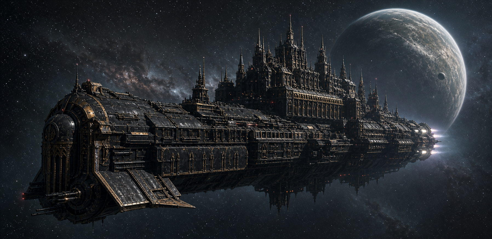

Incident File: HF-077
Hallowed Fury
An Imperial voidship is carrying something it cannot name, and its last clear astropathic transmission is already days overdue.
Player Briefing
The ship is still moving. The message is not.
The Hallowed Fury has fallen out of its expected communications cycle. Routine reports have become contradictory, decks are being sealed without command authorization, and crew assigned to investigate have stopped returning.
Whatever is happening has not yet seized the entire vessel. Command still functions in fragments. The engines still burn. Somewhere in the upper decks, the astropathic choir may still be capable of warning the wider Imperium.
Your group must cross a ship turning against itself before silence becomes permanent.
Mission Priorities
Reach someone who can still hear you.
- 01Warn command
Find an uncompromised officer and establish how far the sabotage has spread.
- 02Reach the astropaths
Cross sealed and hostile decks before the choir is isolated completely.
- 03Send the message
Transmit a warning beyond the ship, even if no rescue can reach you in time.
- 04Identify the blockade
Determine who is controlling access, falsifying orders, and killing investigators.
- 05Survive
Keep enough of the group alive to make the warning credible.
Module Development